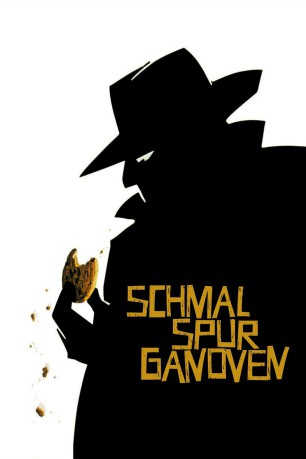
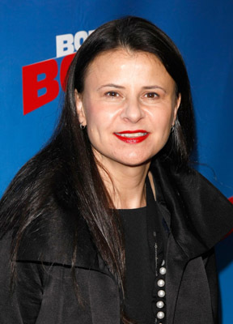
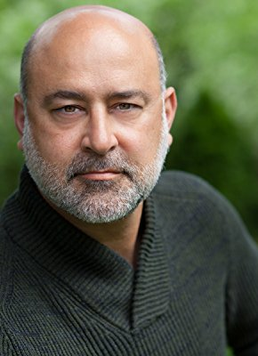

#1939 Schmalspurganoven
Alternativ: Small Time Crooks
 
 IMDB-Wertung: 6.7 / 10
IMDB-Wertung: 6.7 / 10  Metascore: 69
Metascore: 69 
US-amerikanische Komödie von und mit Woody Allen. Er ist in der Rolle des Kleinganoven Ray zu sehen, der mit seinen Freunden extra ein Restaurant aufmacht, um von dort einen Tunnel zur gegenüberliegenden Bank zu graben. Aus den geplanten Pizzen werden Kekse, aber diese verkaufen sich bestens. Der Weg zur Bank gestaltet sich allerdings erschwerlicher.
Jahr: 2000
Dauer: 94 Minuten
FSK: 0
Land: USA Studio: DreamWorks DistributionTonspuren:
Untertitel: Deutsch,
Auflösung: 1080p (1920x1080) Größe: 8120 MB
Genre: Komödie, Krimi
Regisseur:  Woody Allen
Woody Allen
Drehbuch: Woody Allen
Soundtrack:
Darsteller:
 Woody Allen als Ray
Woody Allen als Ray-  Tracey Ullman als Frenchy
 Michael Rapaport als Denny
Michael Rapaport als Denny Tony Darrow als Tommy
Tony Darrow als Tommy Jon Lovitz als Benny
Jon Lovitz als Benny Brian Markinson als Cop
Brian Markinson als Cop- Elaine May als May
- Steve Kroft als Himself
- Isaac Mizrahi als Winklers' Chef
- Kristine Nielsen als Emily Bailey
 Larry Pine als Charles Bailey
Larry Pine als Charles Bailey Hugh Grant als David
Hugh Grant als David- Richard Mawe als Anthony Gwynne
 Frank Wood als Oliver
Frank Wood als Oliver- Julie Halston als Concert Party Guest
 Peter McRobbie als Frenchy's Lawyer
Peter McRobbie als Frenchy's Lawyer Douglas McGrath als Frenchy's Lawyer
Douglas McGrath als Frenchy's Lawyer Elaine Stritch als Chi Chi Potter
Elaine Stritch als Chi Chi Potter Kenneth Edelson als Potter Party Guest
Kenneth Edelson als Potter Party Guest William Hill als Potter Party Guest
William Hill als Potter Party Guest-  Ramsey Faragallah als Potter's Waiter
- Marvin Chatinover als Dr. Henske
- Evelyn Iocolano als Waitress , uncredited
- Carolyn Saxon als Candy Salesperson
- Sam Josepher als Real Estate Agent
- Lawrence Howard Levy als Dynamite Dealer
- Diane Bradley als Cookie Store Customer
- Crystal Field als Cookie Store Customer
- Cindy Carver als Cookie Store Customer
- Ray Garvey als Cookie Store Customer
- Bill Gerber als Cookie Store Customer
- Olivia Hayman als Cookie Store Customer
- Laurine Towler als Cookie Store Customer
- Fanda Nikic als Cookie Store Customer
- Dana Tyler als TV News Reporter
- Brian McConnachie als Paul Milton
- Riccardo Bertoni als Winklers' Butler
- Julie Lund als Linda Rhinelander
- Teri Black als Winkler Party Guest
- John Doumanian als Winkler Party Guest
- Phyllis Burdoe als Winkler Party Guest
- Maurice Sonnenberg als Garth Steinway
- Karla Wolfangle als Modern Dance Performer
- Rob Besserer als Modern Dance Performer
- Ruth Laredo als Concert Pianist
- Anthony Sinopoli als Frenchy's Chauffeur
- Jesse Levy als Church Cellist
- Josephine Calabrese als Churchgoer
- Cindy Wilks als Churchgoer
- Trevor Moran als Churchgoer
Datei: X:\2000\Schmalspurganoven (2000, FSKo.Al., 1920x1080).mkv seit 05.09.2015
Festplatte: HD 1996-2002
 Es gibt insgesamt 82 Filme in der Gruppe '2000'
Es gibt insgesamt 82 Filme in der Gruppe '2000'